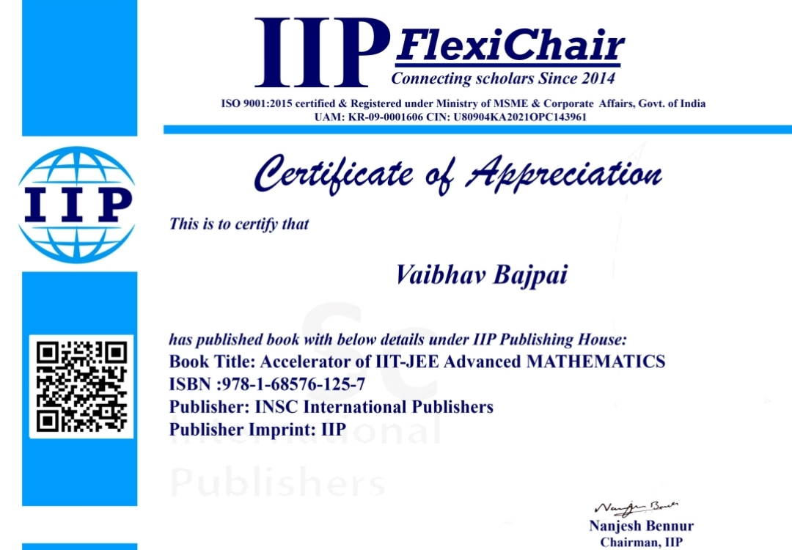
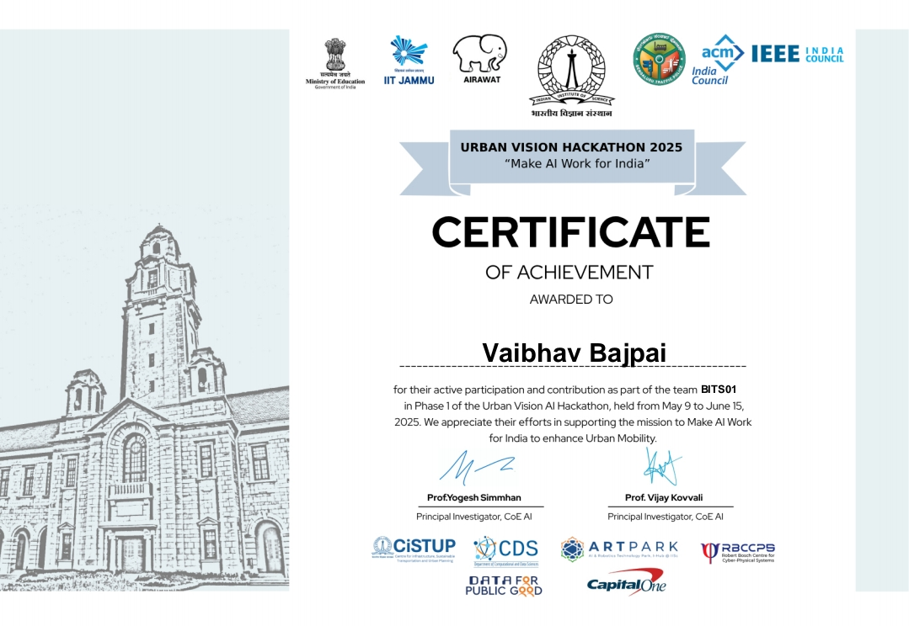
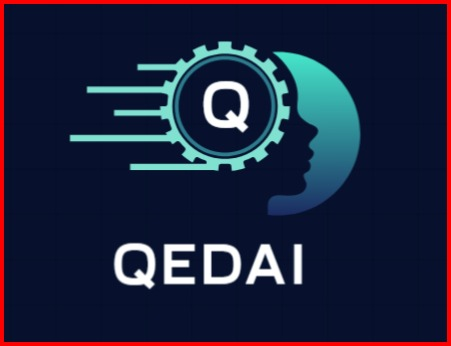
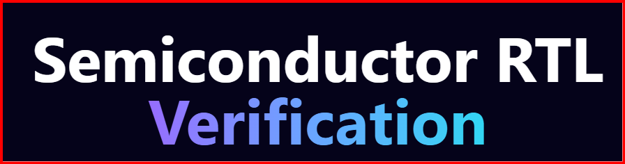

A Lean 4 Formalisation of OpenAI’s Proof of the Cycle Double Cover Conjecture
With J. Carmesin and U. Okur
Academic portfolio · Publications
Publications by Vaibhav Bajpai, including authored books, edited volumes, peer review, and formal mathematics research.
01 / Publications & reviewing
With J. Carmesin and U. Okur
ISBN 978-1-68576-125-7
ISBN 978-93-6252-843-8
ISBN 978-81-69809-36-8
Conference-paper review and research-paper review.
02 / Academic credentials & certificates
Certificates supporting authorship, editorial contributions, and research-oriented technical participation.

Certificate of Appreciation · ISBN 978-1-68576-125-7
View certificate ↗
Volume 3, Book 8 · Print ISBN 978-93-6252-843-8
View certificate ↗
Volume 6S1, Book 1 · Print ISBN 978-81-69809-36-8
View certificate ↗
Certificate of Achievement · Team BITS01 · AI for urban mobility
View certificate ↗03 / AI products
Two systems that move formalization from a specialist task toward an accessible, verifier-guided workflow.

QEDAI is a neuro-symbolic architecture for automated theorem proving in Lean 4. Starting from informal mathematical text—theorem statements and proof sketches from research papers—it orchestrates LLM-based code generation with structured proof search to produce complete, kernel-verified proofs. In short: human-readable mathematics in, machine-checked Lean 4 proofs out.

A Lean 4–centred semiconductor verification platform connecting natural-language requirements, MATLAB/Simulink golden models, HDL implementations, proof obligations, SystemVerilog Assertions, diagnostics, and repair suggestions.
04 / Research projects
Master Thesis
Designed a hybrid symbolic–ML system combining first-order logic with neural proof-search strategies (Seq2Seq and reinforcement learning) to accelerate theorem proving.
Created an AI-powered LMS using NLP-based question generation, reinforcement-learning-driven adaptive pathways, and predictive analytics dashboards.
Industry Project
Developed a RAG-based question-answering system using BM25, FAISS, Hugging Face, Gradio, and guardrails for factual verification.
IISc Hackathon
Built reinforcement-learning-based adaptive traffic signals using YOLO for vehicle detection and DQN for real-time optimization.
Research Project
Implemented Anonymous Walk Embeddings (AWE) for molecular property prediction on QM9, benchmarking a training-free walk-based embedding against learned message-passing models.
05 / Technical expertise
Python · R · Lean 4 · LaTeX
Graph Neural Networks · Reinforcement Learning · LSTMs · CNNs · GANs · Diffusion Models
PyTorch · TensorFlow · Keras · Hugging Face · PyTorch Geometric
FAISS · BM25 · Gradio · Panel · Git · GitHub
Graph Theory · Optimization · Linear Algebra · Statistics · Formal Theorem Proving
06 / Research notes
Essays on Graph Theory, Graph Neural Networks, Lean 4, autoformalization, and formal verification.
Research collaboration, reviewing, or product conversation?
Let’s talk ↗